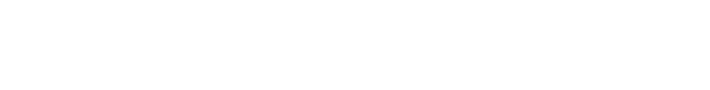
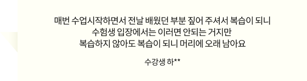

교정학,
또 1위.
12년 연속 베스트 셀러
합격의 길은 김지훈입니다.
*공단기 내부 교정학 강사 매출 기준**yes24 2010.08~2022.03 월별 베스트 > 국내도서 > 수험서 자격증 > 공무원 > 7/9급 기타 과목 > 교정학

지난 12년,
수많은 학생의 선택을 받은
김지훈 正道교정학은
程度
[정도] 를 모릅니다.
철저한 출제 패턴 분석으로 만들어낸
믿기지 않는 적중률
21년 국가직 교정학 95%* 적중
體系
[체계적] 입니다.
자세하고 꼼꼼한 이론설명으로 비전공자 초시생부터
고득점이 목표인 재시생까지
학습 수준에 맞춘 합격 보장 커리큘럼
效率
[효율적] 입니다.
핵심 이론을 여러 번 반복 강조하여
1회 수강으로 다 회독 효과
- 